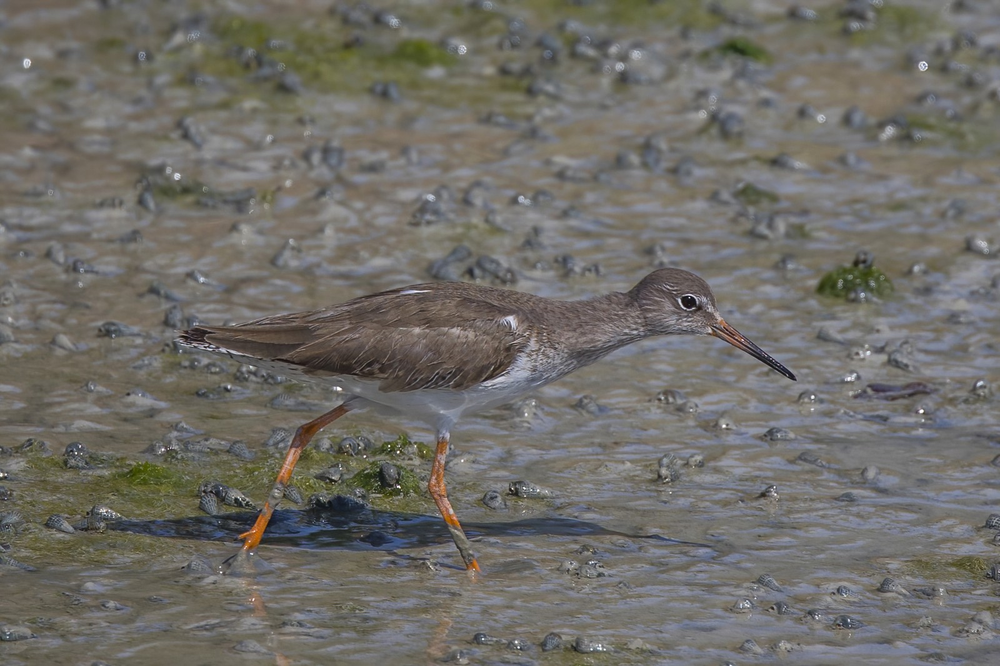
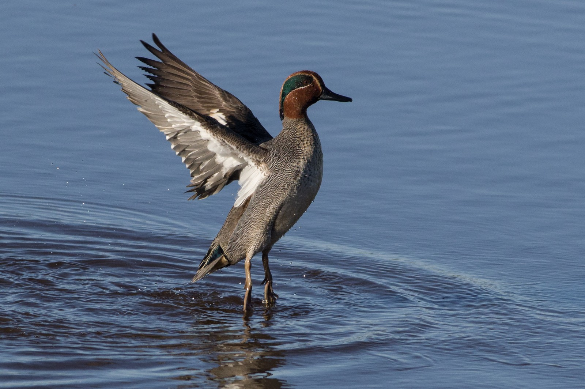
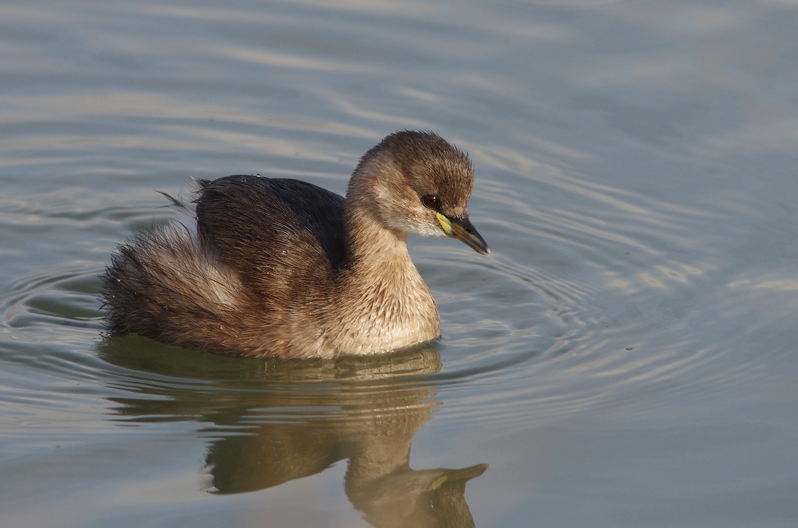

الدريجة الألبية: خوّاض صغير يصل الشمال بالشواطئ العربية
يتبدل ريشها بين بطن أسود صيفًا وحلة رمادية شتاءً، وتجمع مسيرتها بين أراضي التكاثر الشمالية وسواحل العبور والشتاء.
يتبدل ريشها بين بطن أسود صيفًا وحلة رمادية شتاءً، وتجمع مسيرتها بين أراضي التكاثر الشمالية وسواحل العبور والشتاء.

ساقان حمراوان وحافة جناح بيضاء تميزان خوّاضًا يصل إلى كثير من الأراضي الرطبة العربية خلال الهجرة والشتاء.

من السواحل إلى البرك الداخلية، يجمع هذا الطائر المهاجر بين ساقين مخضرتين ومنقار مائل قليلًا إلى أعلى.

طائر صغير يحوّل الأشواك إلى أدوات لتثبيت الفرائس ومخازن للطعام. كيف يفعل الصرد ذلك، وأين نراه في البلاد العربية؟

دليل الغرّة الأوراسية: تمييزها وأعمارها ودورة حياتها وانتشارها العربي بين الإقامة والتكاثر والعبور والشتاء.

هوية الحذفة الشتوية وعبورها وشتاؤها العربي ودورة حياتها، مع توضيح حدود الاسم والتصنيف وحالة الحفظ.

دليل الغطاس الصغير: هويته وريشه ودورة حياته وانتشاره الموسمي العربي، مع فصل الإقامة عن الهجرة والتكاثر.

دليل أبي مجرف: الاسم العلمي والتمييز ودورة الحياة والانتشار الموسمي العربي، مع فصل الحضور الشتوي عن سجلات التكاثر النادرة.

دليل البلبول الشمالي: علامات الجنس والعمر والغذاء ودورة الحياة، مع حضور موسمي موثق من تونس ومصر وفلسطين إلى السعودية والإمارات.

تعرف إلى الصواي الأوراسي: علامات الذكر والأنثى واليافع والغذاء ودورة الحياة، مع انتشار عربي موسمي موثق ومواعيد إقليمية لا تعميمات.

ذيل مشقوق وجناحان مدببان وطيران فوق الحقول والماء. دليل إلى السنونو الشائع وتنوع جماعاته ومواسمه في المغرب العربي والمشرق ومصر والجزيرة العربية.

طائر صغير يهز مؤخرة جسمه عند الماء. تعرّف إلى الطيطوي الشائع وهجرته وشتائه وموائله، من سواحل المغرب العربي إلى المشرق والجزيرة العربية.

كيف نميّز الأبلق الشمالي، وأين يعبر أو يتكاثر في العالم العربي؟ دليل إلى ريشه وموائله وهجرته، من المغرب العربي إلى المشرق والجزيرة العربية.

من ضفاف الأنهار والبحيرات إلى الحقول والحدائق، تلفت الذعرة البيضاء النظر بذيلها الطويل وحركتها الدائمة. يمتد حضورها العربي من المغرب إلى مصر وبلاد الشام…

من المغرب العربي إلى مصر وبلاد الشام وشبه الجزيرة العربية، تحضر الشفشافة الشائعة في مواسم العبور والاشتاء، مع تكاثر موثّق في بعض المناطق. طائر صغير يكشف…

ذيل صدئي يرتجف فوق صخرة أو جدار قديم، ثم طيران قصير نحو الأرض والعودة إلى المجثم. بهذه الحركة قد تلفت الحميراء السوداء الانتباه قبل أن تتضح ألوانها. يمتد…

صقار صغير مألوف فوق الحقول وأطراف المدن عبر أوراسيا وأفريقيا. مقيم أو مهاجر جزئي حسب خطوط العرض. في لبنان والمشرق يظهر كمقيم محلي ومهاجر عبور وشتوي حسب المناطق والارتفاعات. يُعرف بتحليقه الثابت أثناء البحث عن فرائسه، وذيله الطويل نسبيًا ووجهه المخطط. الذكر البالغ غالبًا برأس وذيل رماديّين وظهر وكواسي جناحين مبقّعة بالأسود؛ الأنثى واليافع بظهر صدئي أدكن مخططًا. وتساعد بقع الظهر لدى الذكر البالغ ومخالبه السوداء، حين تُرى بوضوح، على تمييزه عن العُوَيْسِق (العوسق الصغير) Falco naumanni، الذي يكون ظهر ذكره البالغ غير مبقّع ومخالبه فاتحة. ويحتاج التفريق بين إناث النوعين والطيور اليافعة إلى تدقيق عدة علامات في الريش والبنية.

طائر صحراوي رشيق من عائلة الحباريات. نطاقه من شرق سيناء عبر إيران وآسيا الوسطى حتى صحراء غوبي في منغوليا؛ جماعات شمالية مهاجرة جزئيًا تشتّي جنوبًا نحو باكستان وغرب الهند وأجزاء من الجزيرة العربية. في بلاد الشام كان وجوده أوسع تاريخيًا في السهوب الجافة؛ اليوم نادر أو عابر في السياق اللبناني مقارنةً بمهاجري التحليق. هذه البطاقة تثبّت Chlamydotis macqueenii فقط. الحبارى الأفريقية Chlamydotis undulata — شمال أفريقيا وجزر الكناري — نوع منفصل فُصل تصنيفيًا عام 2003، وأبهت لونًا مع اختلاف ريش القمة أثناء العرض؛ نطاقها مغاربي لا آسيوي–شامي، ولا تُخلط مع النوع المعتمد هنا.

طائر كبير أبيض الجناحين بطرف أسود، بمنقار وقدمين أحمرين. يتكاثر عبر أوروبا وشمال أفريقيا وغرب آسيا، ويشتّي أساسًا في أفريقيا جنوب الصحراء. مساره الشرقي يمرّ بتركيا والشام ووادي النيل؛ لبنان جزء من عنق الزجاجة الشامي للمحلّقين بين أوروبا وأفريقيا. يُميَّز عن اللقلق الأسود Ciconia nigra بريشه الأبيض الغالب ومنقاره الأحمر.

طائر أرضي صغير من فصيلة التدرّجيّات، يُسمع أكثر مما يُرى. يتكاثر عبر أوروبا وشمال أفريقيا وغرب آسيا، ويقضي الشتاء في أفريقيا جنوب الصحراء وأجزاء من جنوب آسيا. لبنان وبلاد الشام ممرّ عبور خريفي وربيعي أساسي؛ يختبئ في حقول الحبوب والمراعي والحشائش الكثيفة، ونادرًا ما يطير إلا مسافات قصيرة منخفضة قبل أن يعود إلى الغطاء.

من أوسع الطيور انتشاراً في العالم: يوجد في كل القارات إلا القارة القطبية الجنوبية. في لبنان يُرصد على مدار السنة، وهو أيضاً من الجوارح التي تمرّ مع مسارات الهجرة فوق البلاد.

بومة المخازن أو بومة الحظائر وتعرف بالإنكليزية ( barn owl ) هي مُقيمة ومُفرخة شائعة ومنتشرة في لبنان على الساحل وفي الجبال وفي سهل البقاع يمكنها التكيف مع مجموعة واسعة من الموائل،…

طائر الوروار الأوروبي، ويُعرف بالإنكليزية باسم (European Bee-eater)، هو طائر مهاجر شائع في لبنان. وقد سُجّل حديثًا وجوده في عدّة مناطق لبنانية خلال فصل الصيف، مما يطرح احتمال أن ي…

يُعرف الشهرمان الشائع ( Common Shelduck ) بأنه طائر مُهاجر شَحيح ومشتٍ إلى الأراضي الرطبة، السواحل، والجزر في لبنان. ينتمي إلى عائلة البطيات ( Anatidae ) ويتميّز بحجمه الكبير وريش…